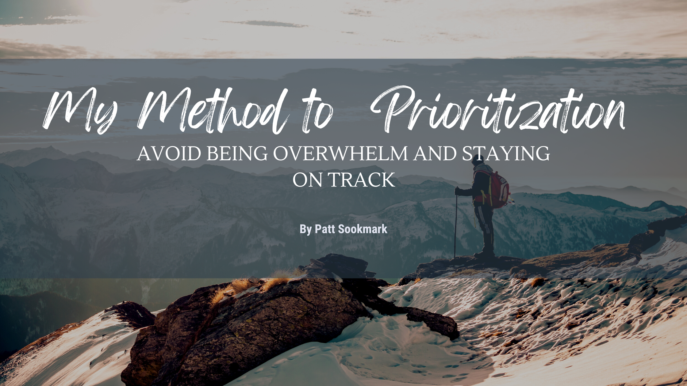

PROJECTS
ABOUT ME

My name is Patt Sookmark
üî• "From 0-1, to web design fun, making the internet a more awesome place for everyone" üî•
After a decade in finance and audit, I pursued my dream of owning a catering business. Although it shut down in 2020, the experience ignited my passion for leveraging technology to overcome challenges faced by small businesses. As a software engineer, I strive to develop innovative solutions that empower small businesses to achieve success in a competitive market.
In my next role, I seek to be part of an autonomous team built on trust, where open communication and constructive feedback are valued. A collaborative and supportive environment that fosters creativity and drives continuous improvement. Working alongside talented individuals who share a common goal is essential to me. I am particularly interested in joining companies in the food tech or education tech industries, as I highly value their potential to create value and enhance performance for small businesses.
MY BLOGS
-

-

-

-

-

- 
-

-

-

-
-
-
-
-


TECH I KNOW
- JAVASCRIPT
- REACT
- TYPESCRIPT
- CSS, STYLED COMPONENTS
- MUI, PRIMEREACT
- MOCHA, CHAI
- CYPRESS
FRONT END
- ILLUSTRATOR
- CANVA
- MIRO
- FIGMA
DESIGN TOOLS
- EXPRESS
- POSTGRES
- PYTHON
- AWS IAM
- DOCKER
- S3 BUCKET